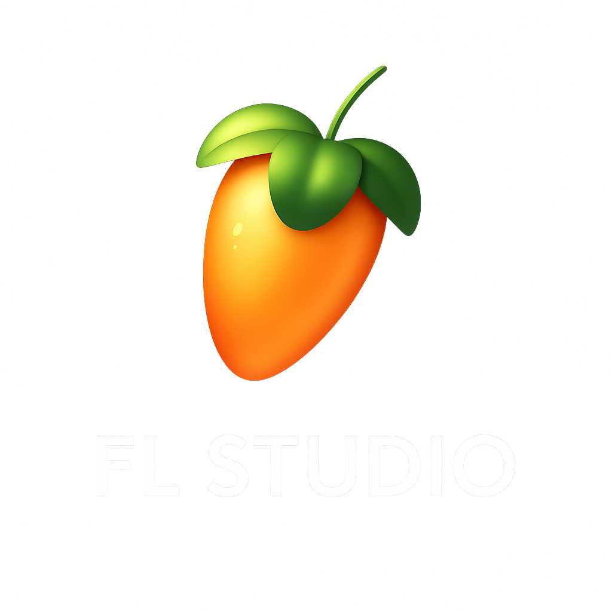

El software de producción musical más usado del mundo

1. Identidad del negocio
¿Cuál será el nombre de tu emprendimiento?
El nombre de mi emprendimiento es FL Studio.
¿A qué se dedicará tu negocio?
Se dedicará al desarrollo de software para la producción musical digital.
¿Qué lo hará diferente de otros similares?
Su interfaz intuitiva, amplia librería de sonidos y efectos, además de su accesibilidad para principiantes y profesionales.
2. Imagen y logo
¿Qué símbolo, dibujo o iniciales podrían representar tu negocio?
Una fruta naranja con hojas verdes (ícono de FL Studio).
¿Qué colores quieres usar para que transmitan la esencia de tu emprendimiento?
Tonos naranja, verde y negro, que transmiten creatividad y modernidad.
¿Podrías diseñar un logo sencillo en Canva, PowerPoint o Paint que identifique a tu negocio?
Sí, ya contamos con un logo representativo:
3. Misión y visión
Misión:
Nuestro objetivo principal es ofrecer una herramienta poderosa y accesible para que cualquier persona pueda crear música profesional.
Visión:
En 5 años, nos vemos como el software líder mundial en producción musical, presente en estudios, escuelas y hogares de todo el mundo.
4. Estilo de la página
¿Qué tipografía (fuente) usarás para que combine con la temática?
Usaremos la fuente Segoe UI, moderna y clara.
¿El fondo será de un color sólido o tendrá una imagen relacionada?
El fondo será sólido oscuro, para resaltar los contenidos.
¿Qué estilo visual quieres que tenga tu sitio?
Un estilo tecnológico y moderno, transmitiendo innovación y creatividad.